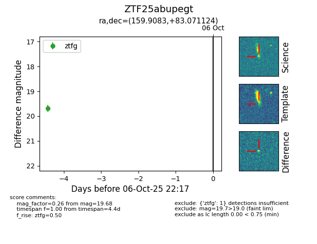

FINK: ZTF25abupegt
Lasair: ZTF25abupegt
ALeRCE: ZTF25abupegt
ZTF25abupegt (ztf,fink)
equatorial (ra, dec) = (159.9083,+83.07112)
galactic (l, b) = (127.4128,+32.87089)

last ztfg=19.68
1 ztfg detections